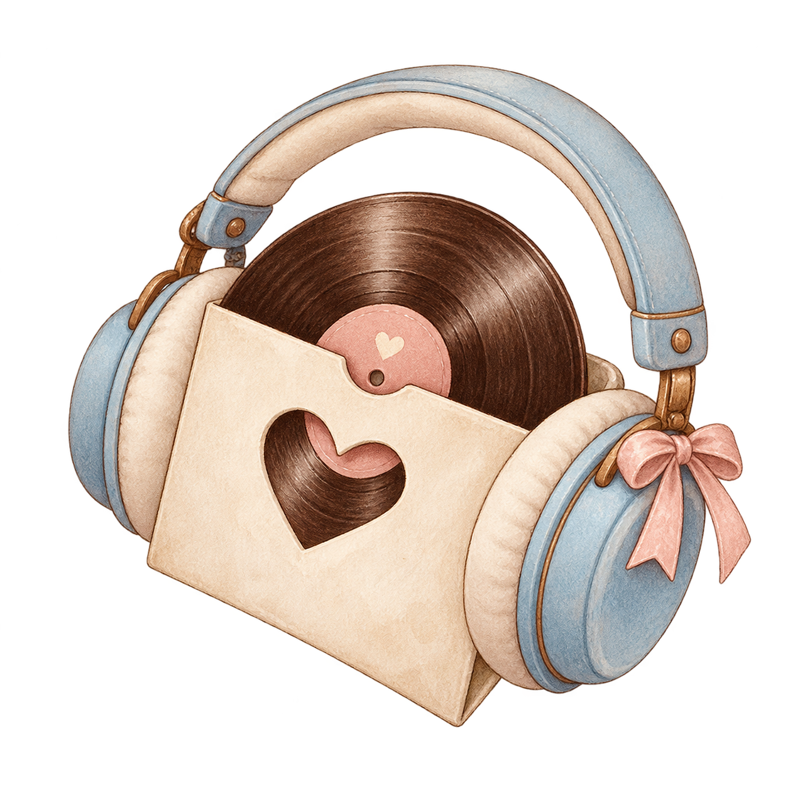
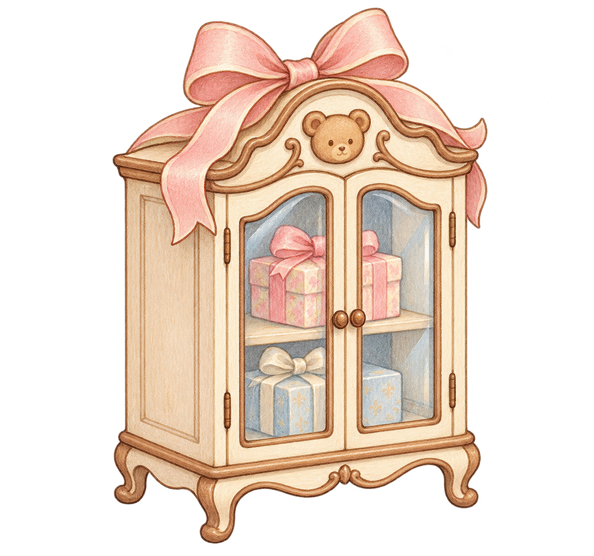
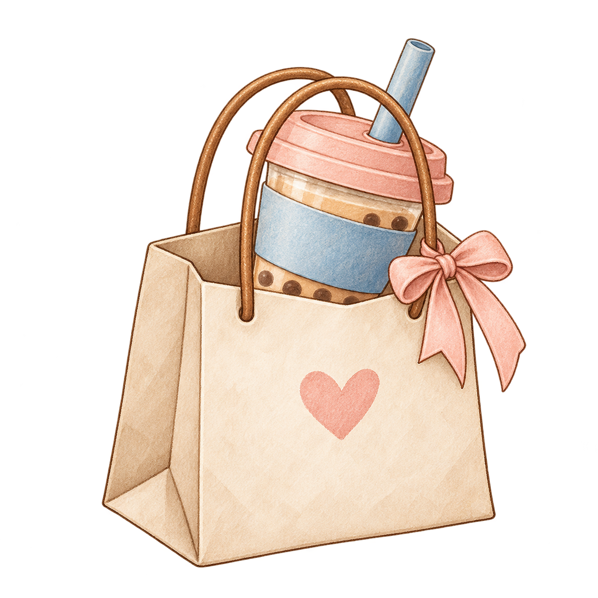
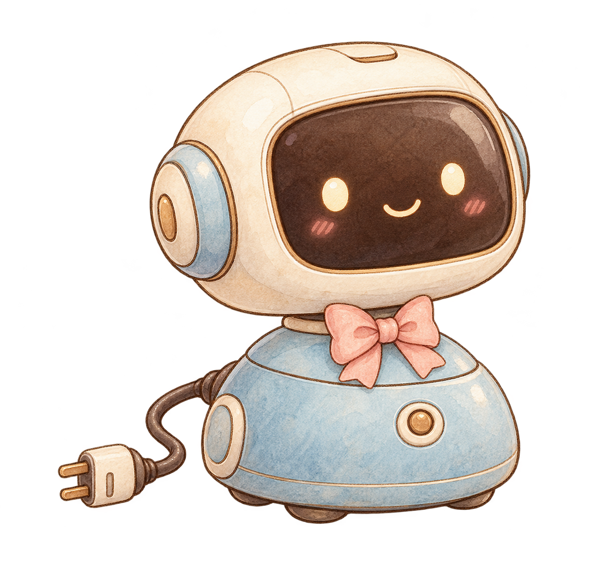

A LITTLE TIME FOR US
Detour
一起，绕个小弯
听首歌，拆份礼物。
把时间花在喜欢的小事上。

SIDE BY SIDE一起听歌
把同一首歌，
分给两个人的耳朵。
留个位置给我们

一起听歌
把同一首歌，
分给两个人的耳朵。
正在准备
以后在这里选一首歌，一起听，也把喜欢的歌慢慢收起来。
LITTLE TREASURES

礼物柜
每一份心意，
都好好收着。
收藏小惊喜

都好好收着。
正在准备
给彼此的小礼物，以后都会有自己的位置。
PICK SOMETHING SWEET

一起购物
一杯奶茶，
或一份惦记。
挑点喜欢的

或一份惦记。
正在准备
点杯奶茶、挑件喜欢的小东西，以后从这里出发。
A LITTLE CLOSER连接到身边
让屏幕里的陪伴，
再靠近一点点。
等小伙伴到家

连接到身边
让屏幕里的陪伴，
再靠近一点点。

正在准备
为 Stack-chan 这样的实体小伙伴留一扇门。等连接做好，就能在这里见面。